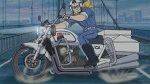

🗾 OSAKA
本田速人の大阪旅遊
4/29–5/04

每日行程
D0 04/28
D1 04/29
D2 04/30
D3 05/01
D4 05/02
D5 05/03
D6 05/04
✈️
2026 大阪 / 紀伊半島 自駕之旅
🇹🇼 桃園
→
🇯🇵 關西
2026年4月29日 – 5月4日 · 6天5夜
✈️
D1 · 4/29（週三）
去程班機 · JX820
🇹🇼 TPE
08:30
→ 🇯🇵 KIX
12:15
直飛 · 2時間45分
AIRBUS A330-900NEO · 經濟艙
🛫 桃園第
1
航廈 出發
請提前2小時抵達機場
🏨
D1 · 4/29
大阪機場奧德西斯套房酒店
Osaka Airport Odyssey Suites · JR 鳳站步行5分
チェックイン
🚗
D2 · 4/30
Rental819 泉佐野
關西機場附近取車 · 自駕之旅開始
攜帶國際駕照 + 護照
🏨
D2 · 4/30
東橫INN 伊勢市車站
Toyoko Inn Ise-shi Eki
チェックイン
🏨
D3 · 5/01
龜之井酒店 那智勝浦
Kameyoi Hotel Nachikatsuura
チェックイン
🍜 宵夜拉麵 & 飲料吧（免費・至翌晨 6 點）
🍽️ 晚餐需加購 · 早餐附贈
♨️ 大浴場 · 可借浴衣至館外泡湯
🎯 館內有名產店、遊戲室（桌球、飛鏢）
🏨
D4 · 5/02
和歌山串本萬楓酒店
Fairfield by Marriott · 串本橋杭岩道之驛共構
チェックイン
⚠️ 館內無餐廳、無早餐（2025 起取消早餐盒）；黃金週周邊餐廳擁擠，建議抵達前先用餐，或至 Okuwa 超市採購隔天早餐
💳 前台僅收信用卡／電子支付，不收現金、不換幣（自販機可用現金）
🅿️ 停車場客滿時請停旁邊道之驛（串本橋杭岩）停車場
🛁 無浴缸，Rain Shower 淋浴；刮鬍刀、梳子等備品 Check-in 時向前台索取
🏨
D5 · 5/03
大阪機場奧德西斯套房酒店
Osaka Airport Odyssey Suites
チェックイン
🚗
D5 · 5/03
Rental819 還車
返還租車，確認油量加滿
確認車輛無損傷
✈️
D6 · 5/04（週一）
回程班機 · JX821
🇯🇵 KIX
13:25
→ 🇹🇼 TPE
15:20
直飛 · 2時間55分
AIRBUS A330-900NEO · 經濟艙
🛫 關西第
1
航廈 出發
請提前2小時抵達機場
行李清單
0 / 0 已完成
清除全部
🚗 自駕注意事項
日本靠左行駛
，方向盤在右側
高速公路使用 ETC 卡，或在收費站付現
停車場大多需付費，請事先查好各景點停車場
加油站：一般加
レギュラー（Regular）
即可
還車前記得加滿油，帶好收據
⛩️ 神社寺廟參拜禮儀
進鳥居前先輕鞠躬
手水舍：右手持柄杓→沖左手→沖右手→漱口→沖柄杓
拍手（柏手）：二禮二拍手一禮
伊勢神宮內宮禁止拍照（特定區域）
🌧️ 雨備景點
D3 (5/01)
：鳥羽水族館
D4 (5/02)
：太地町立鯨魚博物館
建議下雨天改走室內景點，調整行程順序
💴 金錢 & 支付
建議在台灣機場或市區先換好日幣
部分小店、神社僅收現金
便利商店 ATM（7-11 Seven Bank）可提領外幣
交通系 IC 卡（ICOCA）在關西很方便
📞 緊急聯絡資訊
警察：
110
救護車 / 消防：
119
台灣外交部急難救助：
+886-800-085-095
台灣駐大阪辦事處：+81-6-6443-8481
🗺️
行程
📋
已預約資訊
🧳
行李
📝
備註